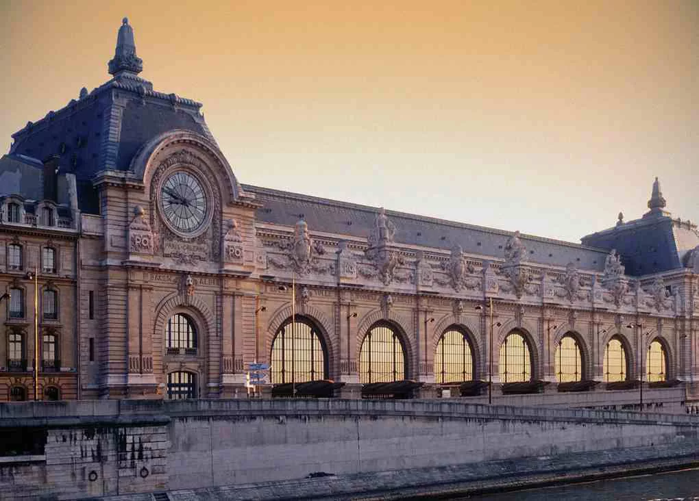

MUSEU D’ORSAY | PARIS, FRANÇA
O Museu de Orsay (Musée d'Orsay em francês) é um museu na cidade de Paris, na França. Situa-se na margem esquerda do rio Sena no 7.º arrondissement. As colecções do museu apresentam principalmente pinturas e esculturas da arte ocidental do período compreendido entre 1848 e 1914. Entre outras, estão aí presentes obras de Van Gogh, Cézanne, Degas, Maurice Denis, Odilon Redon. Existem também exposições temporárias que ocorrem paralelamente à exposição permanente.
História
O edifício, que actualmente alberga o museu, era originalmente uma estação ferroviária, Gare du Quai d'Orsay, construída para o Chemin de Fer de Paris à Orléans (em português, Caminho de ferro de Paris a Orleães), no local onde se erguera até 1871 um antigo palácio administrativo, o Palais d'Orsay. Foi inaugurado em 1898, a tempo da Exposição Universal de 1900. O projecto foi do arquitecto Victour Laloux.
Em 1939, deixou de ser o terminal da linha que ligava Paris a Orleães devido ao comprimento reduzido do cais, passando a ser apenas uma estação da rede suburbana de caminhos de ferro; e mais tarde, durante a Segunda Guerra Mundial serviu de centro de correios. A estação foi fechada em 1 de Janeiro de 1973.
Em 1977, o Governo francês decidiu transformar o espaço num museu. Foi inaugurado pelo presidente de então, François Mitterrand, em 1 de Dezembro de 1986. Os arquitectos Renaud Bardon, Pierre Colboc e Jean-Paul Philippon foram os responsáveis pela adaptação da estação.
Coleção
As colecções do museu provêm essencialmente de três locais: do Museu do Louvre, as obras de artistas nascidos a partir de 1820, ou que tenham emergido no mundo da arte com a Segunda República; do Museu do Jeu de Paume, as obras impressionistas desde 1947; e do museu de arte moderna de Paris, as obras mais recentes. Estas colecções abrangem várias vertentes das artes plásticas tais como a pintura, a escultura, a fotografia entre outras.